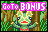
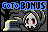
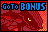
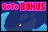
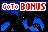

In addition to the Ruby and Sapphire fields, the game contains 6 bonus games. Five of them are tied to the player's progress in catching Pokémon, and the sixth can be randomly entered.
After a player gains three Poké Ball icons at the center of the screen, they will be able to access a bonus game. Which bonus game the player will play is dependent on the field they are playing on as well as how many bonus games they have already completed, in the following order.
| Ruby | Sapphire | |||
|---|---|---|---|---|
| First game |

|
Kecleon |

|
Duskull |
| Second game |

|
Groudon |

|
Kyogre |
After the player has completed both of these games, they will have to complete them both a second time (catching Groudon/Kyogre in the process). Once they have done so, the next bonus that will be available is the Rayquaza bonus. 
After completing the Rayquaza bonus once, the player will then have to complete the two bonus stages in the table above twice each (catching Groudon/Kyogre a second time in the process) before they can access the Rayquaza bonus again. On the second time, the player can catch Rayquaza.
After catching Rayquaza, the cycle of bonus stages reset.
If at any point the player plays a bonus stage but does not defeat it, the next bonus stage will be the same one they have failed. They will have to defeat the bonus stage in order to move on to the next.
Bonus stages can be unlocked via the slots, which can allow the player to catch fewer than three Pokémon to trigger the next stage. The bonus that shows up on the roulette is the next bonus that the player has to defeat.
The Kecleon stage, available as the first bonus on the Ruby field, contains an invisible Kecleon walking around the field. The player must hit this invisible Kecleon once to knock it down, and a second time to "damage" it. After 10 times damaging it, Kecleon will concede defeat, clearing the stage.
Hitting the large tree at the top of the stage will drop a Devon Scope. If collected, the player can see the invisible Kecleon as it walks around. Additionally, while it is invisible, the Kecleon will rustle grass and flowers and cause ripples on the pond, allowing the player to guess its location even without the Devon Scope.
This stage has a time limit of 2:00. If the ball falls through the board, it will reappear.
The Groudon stage, available as the second bonus on the Ruby field, requires the player to fight and defeat Groudon. Groudon's attack pattern is as follows:
Additionally, when the stage begins, three rocks fall on the field before the ball even appears.
The player must hit Groudon 15 times the first time to clear the stage, and 18 times the second time to clear the stage and catch it.
This stage has a time limit of 3:00. If the ball falls through the board, it will reappear.
The Duskull stage, available as the first bonus on the Sapphire field, contains two Duskull floating horizontally across a field with several gravestone obstacles. When a Duskull is hit, it will disappear and another will take its place. After 20 Duskull have been hit, a Dusclops will appear and challenge the player. The player must hit Dusclops five times to defeat it.
If the player tries to hit Dusclops from the front while Dusclops is standing still, Dusclops will absorb the ball and throw it back at the player. The player can only inflict damage on Dusclops when it is walking, or if the ball hits Dusclops from the side or behind.
This stage has a time limit of 2:00. If the ball falls through the board, it will reappear.
The Kyogre stage, available as the second bonus on the Sapphire field, requires the player to fight and defeat Kyogre. Kyogre's attack pattern is as follows:
The player must hit Kyogre 15 times the first time to clear the stage, and 18 times the second time to clear the stage and catch it.
This stage has a time limit of 3:00. If the ball falls through the board, it will reappear.
The Rayquaza stage, available as the third bonus on both fields, requires the player to fight and defeat Rayquaza. Unlike Kyogre and Groudon, Rayquaza moves around the field even when not attacking, and alternates between hovering above the surface of the field (where it is unhittable) and being on the surface. Rayquaza's attack pattern is as follows:
The player must hit Rayquaza 15 times the first time to clear the stage, and 18 times the second time to clear the stage and catch it.
This stage has a time limit of 3:00. If the ball falls through the board, it will reappear.
The Spheal bonus stage can be accessed by either paying 60 coins for it in the Poké Mart, or getting the ball into Whiscash's (Ruby field) or Pelipper's (Sapphire field) mouth. Whiscash seems to appear after hitting the Chinchou switch several times, and Pelipper will take the ball when the P-Switch below it is flashing, which in turn may be due to hitting 50 Shroomish.
This bonus stage lasts 2:00 and is simply an opportunity for the player to rack up points. Two Sealeo flank a basketball hoop, with two ice slides leading to the hoop from the water part of the field. If the player launches the ball up one of the ramps, a Sealeo will bounce the ball into the basket, giving the player points.
Additionally, Spheal can appear in the water. Some of them simply swim back and forth, and can be hit for points. Other Spheal jump out of the water and attempt to climb the ice slides. Without any interaction, they will fail and slide back into the water. If the player hits a Spheal while it is on the slide, the Spheal will roll up the slide and get bounced into the basket by Sealeo, giving the player points.
It's possible to force a Sealeo to drop a Spheal it is bouncing by hitting the Spheal such that its stun animation overlaps with the time it is supposed to hit the Spheal, in which case the Spheal will fall without ever making it into the basket, preventing the player from getting points for it.